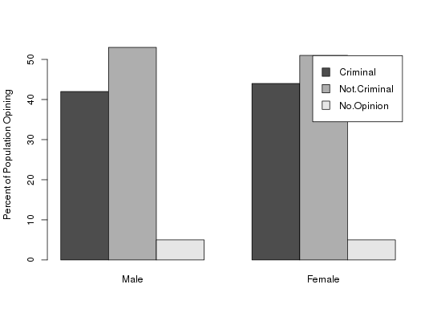
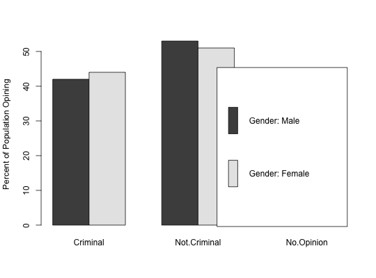

Data for Exercise 2.76
A data frame with 4 observations on the following 16 variables.
Female
MaleCollege Grade School High School18-24 25-29 30-49 50-olderCatholic
ProtestantKitchens, L. J. (2003) Basic Statistics and Data Analysis. Duxbury
INFO <- c(43,52,5,42,53,5,44,51,5,30,67,3,45,50,5,58,33,9,27,67,6,26,70,4,45, 52,3,54,39,7,49,47,4,39,55,6) INFOmat <- matrix(INFO,nrow=12,byrow=TRUE) INFOmat#> [,1] [,2] [,3] #> [1,] 43 52 5 #> [2,] 42 53 5 #> [3,] 44 51 5 #> [4,] 30 67 3 #> [5,] 45 50 5 #> [6,] 58 33 9 #> [7,] 27 67 6 #> [8,] 26 70 4 #> [9,] 45 52 3 #> [10,] 54 39 7 #> [11,] 49 47 4 #> [12,] 39 55 6 #>rownames(INFOmat) <- c("National","Gender: Male","Gender: Female", "Education: College","Education: High School","Education: Grade School", "Age: 18-24", "Age: 25-29", "Age: 30-49", "Age: 50-older", "Religion: Protestant", "Religion: Catholic") colnames(INFOmat) <- c("Criminal", "Not.Criminal", "No.Opinion") INFOmat#> Criminal Not.Criminal No.Opinion #> National 43 52 5 #> Gender: Male 42 53 5 #> Gender: Female 44 51 5 #> Education: College 30 67 3 #> Education: High School 45 50 5 #> Education: Grade School 58 33 9 #> Age: 18-24 27 67 6 #> Age: 25-29 26 70 4 #> Age: 30-49 45 52 3 #> Age: 50-older 54 39 7 #> Religion: Protestant 49 47 4 #> Religion: Catholic 39 55 6 #>barplot(t(INFOmat[2:3,]),beside=TRUE,legend=TRUE,names=c("Male","Female"), ylab="Percent of Population Opining")barplot((INFOmat[2:3,]),beside=TRUE,legend=TRUE,ylab="Percent of Population Opining" )remove(INFO,INFOmat)